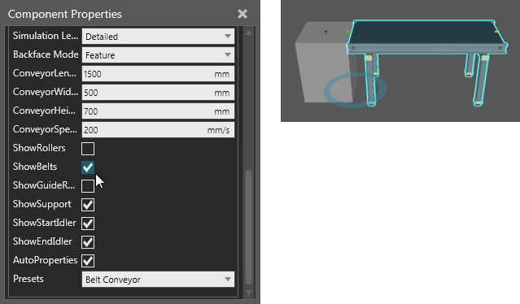
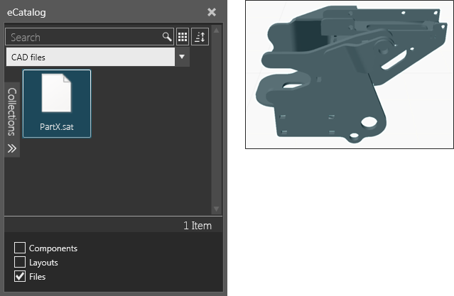
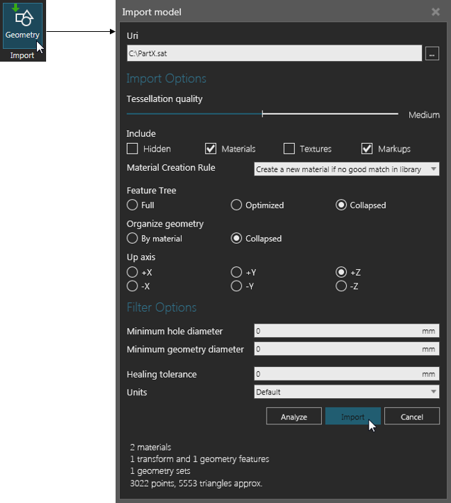
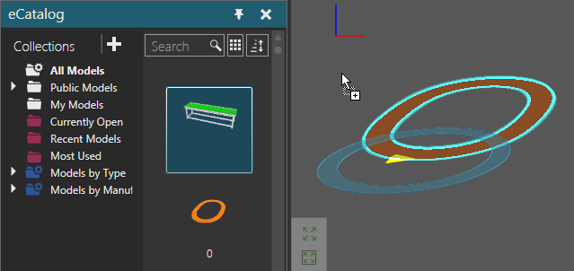
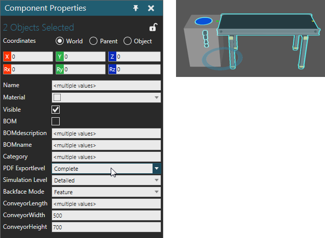
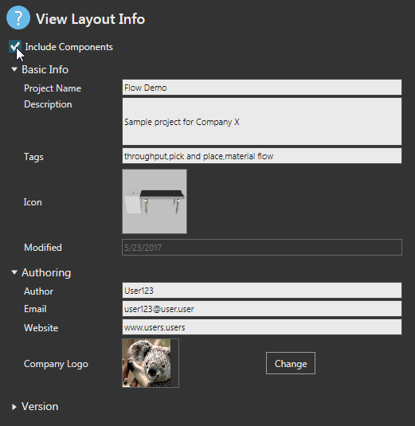

When you run R-Pro 2.1 a new empty layout is automatically opened in the 3D world.
In the layout, you can add and edit components to form a configuration.

Editing the properties of a selected component
You may also import CAD files as new components in a layout. One option is to drag and drop CAD files to quickly import them as components.

Another option is to use an Import tool to analyze CAD files and customize how they are imported as components.

Generally, components are added from the eCatalog panel to the 3D world layout.

Displayed item in a collection linked to sources being dragged into the 3D world
When a component is selected, you may manipulate it as well as edit its properties. When two or more components are selected, you can manipulate all of the selected components as well as edit any matching properties that can have the same value. For example, components cannot have the same name, but they can have the same PDFExportLevel mode.

When you save a layout, you have the option of including components in the layout file. Why? Components and layouts are archive files. Including components increases the file size of a layout but allows you to share the components with users who may or may not have access to the components of that layout.

By default, a layout references a component by its VCID, a unique key for identifying and loading the component in the 3D world. The VCIDs of components along with other items are saved in a layout. This includes any content in the drawing world as well as the configuration for components (location, property values, connections).